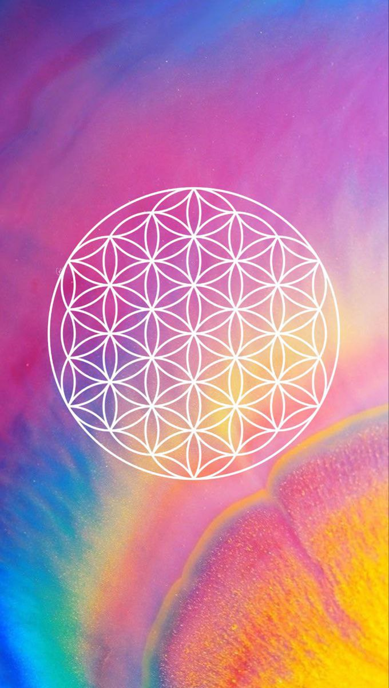

Vizuális alkotó
Slisz Klaudia
Fény, forma és belső történetek képekben.
Alkotások
A fény nem csak megvilágít.
Történetet mesél.
Forma. Fény. Érzés.

Minden kép egy belső állapot fordítása.
Rólam
Slisz Klaudia
A képeim hangulatok: mindig egy-egy belső téma köré épülnek — fény, virág, szív, geometria. Motívumok, amelyek visszatérnek, ahogy az életünkben is a legfontosabb dolgok térnek vissza.
Kapcsolat
Beszéljünk.
Ha megszólított valamelyik alkotás, keress bátran.